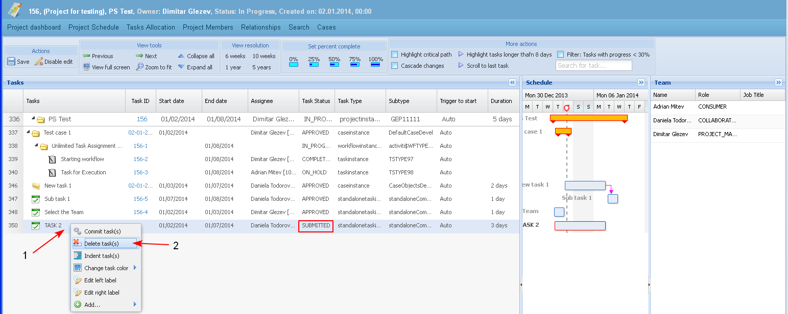
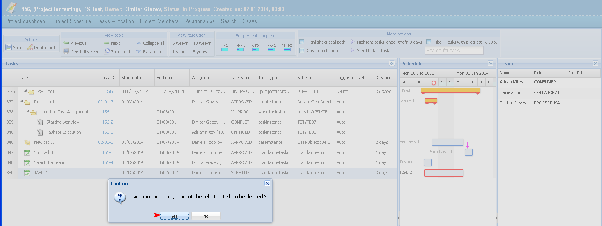
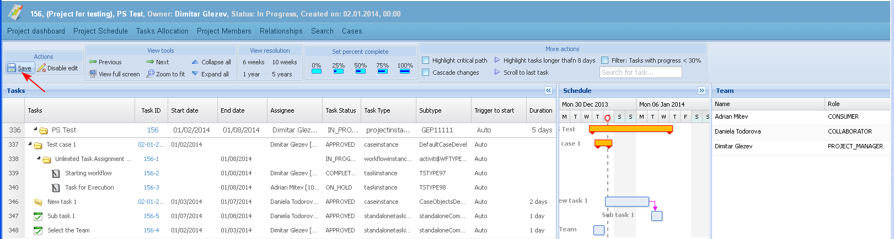

The user may delete tasks in the project schedule.
Note: Tasks that have been started can be stopped - see "Stop task".
Preconditions
- Only a leaf (stanalone) task in status "Submitted" could be deleted.
- Any entry in the schedule could be deleted only if all its sub-tasks are in status "Submitted".
- A task from type "Project" could not be deleted.
- A task from type "Sub-project" could be deleted only if in status "Submitted".
- Only the PM, team leads, or creator can delete a task.
- Tasks can not be deleted if work hours have been applied.
- The user selects the task right-clicking on it and then the operation "Delete" (1-2).

- The system opens the screen for confirmation prior to executing the command. The user chooses to delete the task.

- The system removes the deleted task from the project schedule. The user saves the changes in the schedule.

When a task is deleted from the project schedule it is permanently deleted and no trace is left.